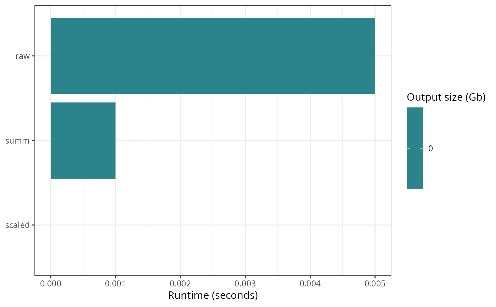

Plot per-target runtime and output size from targets metadata
Source: R/ga_targets_meta_plot.R
ga_targets_meta_plot.Rd
Draw one horizontal bar per target from targets::tar_meta(), with bar
length mapped to the target runtime (seconds) and fill mapped to the output
size (Gb). Because tar_meta() only stores the metadata of the
latest build of each target, this figure summarizes the resource impact
of the last pipeline run. Targets that emitted a warning during that run are
flagged with a red star.
This is the metadata-based companion of ga_autometric_lastrun()
(which reconstructs the same "last run" picture from an autometric
log) and of ga_targets_network() (which shows the dependency
structure).
Usage
ga_targets_meta_plot(
names_targets = NULL,
targets_only = TRUE,
store = targets::tar_config_get("store"),
tar_meta_raw = NULL,
transform = "pseudo_log",
mark_warnings = TRUE
)Arguments
- names_targets
(character, default
NULL) Optional vector of target names to restrict the plot to. WhenNULL, every target is shown. Passed totargets::tar_meta().- targets_only
(logical, default
TRUE) Whether to show only actual targets (not functions or other global objects). Passed totargets::tar_meta().- store
(character, default
targets::tar_config_get("store")) Path to the targets data store. See?targets::tar_meta().- tar_meta_raw
(optional data.frame) A precomputed
targets::tar_meta()result. When supplied,store,names_targetsandtargets_onlyare ignored. Useful for tests or pre-loaded metadata.- transform
(character, default "pseudo_log") Transformation applied to the x (runtime) axis via
ggplot2::scale_x_continuous(). Runtimes often span several orders of magnitude, so a compressing transform such as "pseudo_log" or "log1p" keeps short targets visible. Use "identity" for a linear axis.- mark_warnings
(logical, default
TRUE) Whether to overlay a red star on targets that recorded a warning in their metadata.
Value
A ggplot object with one bar per target.
Examples
targets::tar_dir({ # tar_dir() runs code from a temp dir for CRAN.
targets::tar_script(
{
list(
targets::tar_target(raw, rnorm(1e5)),
targets::tar_target(scaled, raw * 2),
targets::tar_target(summ, mean(scaled))
)
},
ask = FALSE
)
targets::tar_make(reporter = "silent")
ga_targets_meta_plot(tar_meta_raw = targets::tar_meta(targets_only = TRUE))
})
